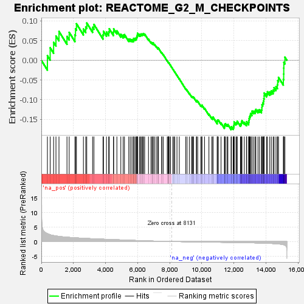
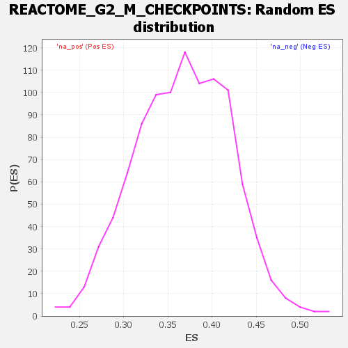

| Dataset | DGErankName |
| Phenotype | NoPhenotypeAvailable |
| Upregulated in class | na_neg |
| GeneSet | REACTOME_G2_M_CHECKPOINTS |
| Enrichment Score (ES) | -0.17602018 |
| Normalized Enrichment Score (NES) | NaN |
| Nominal p-value | NaN |
| FDR q-value | 1.0 |
| FWER p-Value | 0.0 |

| SYMBOL | RANK IN GENE LIST | RANK METRIC SCORE | RUNNING ES | CORE ENRICHMENT | |
|---|---|---|---|---|---|
| 1 | SFN | 378 | 2.707 | 0.0115 | No |
| 2 | PSMB8 | 550 | 2.342 | 0.0318 | No |
| 3 | H2BC21 | 764 | 2.056 | 0.0455 | No |
| 4 | TP53 | 911 | 1.914 | 0.0617 | No |
| 5 | PSMC6 | 1099 | 1.767 | 0.0731 | No |
| 6 | PSMD5 | 1597 | 1.497 | 0.0605 | No |
| 7 | PSME1 | 1735 | 1.438 | 0.0709 | No |
| 8 | YWHAB | 2094 | 1.290 | 0.0646 | No |
| 9 | PSMA7 | 2127 | 1.277 | 0.0797 | No |
| 10 | BRCC3 | 2187 | 1.258 | 0.0928 | No |
| 11 | YWHAH | 2621 | 1.124 | 0.0794 | No |
| 12 | PSMD10 | 2766 | 1.082 | 0.0845 | No |
| 13 | PSMD12 | 2830 | 1.061 | 0.0946 | No |
| 14 | PSMD9 | 3193 | 0.963 | 0.0837 | No |
| 15 | RAD50 | 3275 | 0.940 | 0.0910 | No |
| 16 | WRN | 3842 | 0.811 | 0.0646 | No |
| 17 | RPS27A | 3871 | 0.805 | 0.0736 | No |
| 18 | RPA1 | 4058 | 0.760 | 0.0716 | No |
| 19 | PSMA3 | 4198 | 0.728 | 0.0722 | No |
| 20 | PSMD3 | 4230 | 0.720 | 0.0799 | No |
| 21 | UBE2V2 | 4492 | 0.663 | 0.0716 | No |
| 22 | H2BC4 | 4506 | 0.661 | 0.0796 | No |
| 23 | PSMA2 | 4706 | 0.612 | 0.0747 | No |
| 24 | HERC2 | 4952 | 0.562 | 0.0661 | No |
| 25 | ATM | 5097 | 0.524 | 0.0637 | No |
| 26 | MRE11 | 5179 | 0.506 | 0.0652 | No |
| 27 | H2BC8 | 5446 | 0.453 | 0.0537 | No |
| 28 | YWHAG | 5537 | 0.433 | 0.0536 | No |
| 29 | PSMB7 | 5642 | 0.413 | 0.0523 | No |
| 30 | PSMB9 | 5729 | 0.398 | 0.0520 | No |
| 31 | MCM6 | 5754 | 0.392 | 0.0557 | No |
| 32 | ATR | 5833 | 0.376 | 0.0556 | No |
| 33 | CHEK2 | 5905 | 0.358 | 0.0558 | No |
| 34 | PSME2 | 5938 | 0.350 | 0.0584 | No |
| 35 | PSME3 | 5960 | 0.345 | 0.0616 | No |
| 36 | H2BC7 | 5984 | 0.341 | 0.0647 | No |
| 37 | ORC1 | 5993 | 0.339 | 0.0688 | No |
| 38 | PSMD11 | 6109 | 0.315 | 0.0654 | No |
| 39 | PSMB4 | 6175 | 0.300 | 0.0652 | No |
| 40 | PSMB3 | 6211 | 0.293 | 0.0668 | No |
| 41 | MCM4 | 6282 | 0.279 | 0.0659 | No |
| 42 | H4C9 | 6324 | 0.271 | 0.0669 | No |
| 43 | MCM3 | 6363 | 0.264 | 0.0679 | No |
| 44 | PSMC4 | 6437 | 0.250 | 0.0665 | No |
| 45 | RBBP8 | 6675 | 0.208 | 0.0536 | No |
| 46 | PSMB1 | 6829 | 0.187 | 0.0461 | No |
| 47 | TP53BP1 | 6896 | 0.175 | 0.0441 | No |
| 48 | H2BC12 | 6960 | 0.164 | 0.0421 | No |
| 49 | UBA52 | 6965 | 0.163 | 0.0441 | No |
| 50 | PSMB2 | 7058 | 0.145 | 0.0399 | No |
| 51 | H2BC17 | 7163 | 0.127 | 0.0348 | No |
| 52 | H2BC14 | 7253 | 0.115 | 0.0304 | No |
| 53 | H2BC13 | 7277 | 0.111 | 0.0304 | No |
| 54 | PSMC5 | 7280 | 0.111 | 0.0318 | No |
| 55 | YWHAQ | 7499 | 0.080 | 0.0185 | No |
| 56 | PSMD13 | 7514 | 0.078 | 0.0186 | No |
| 57 | PSMB5 | 7601 | 0.065 | 0.0138 | No |
| 58 | CDC7 | 7844 | 0.034 | -0.0017 | No |
| 59 | WEE1 | 7901 | 0.027 | -0.0051 | No |
| 60 | CHEK1 | 7909 | 0.027 | -0.0052 | No |
| 61 | H2BC9 | 7932 | 0.023 | -0.0063 | No |
| 62 | H2BC3 | 7938 | 0.022 | -0.0063 | No |
| 63 | YWHAZ | 8008 | 0.014 | -0.0107 | No |
| 64 | TOPBP1 | 8034 | 0.011 | -0.0122 | No |
| 65 | RAD9A | 8189 | -0.007 | -0.0223 | No |
| 66 | PSMD1 | 8253 | -0.014 | -0.0262 | No |
| 67 | RPA2 | 8314 | -0.019 | -0.0299 | No |
| 68 | PSMB11 | 8450 | -0.036 | -0.0384 | No |
| 69 | MCM2 | 8596 | -0.051 | -0.0473 | No |
| 70 | YWHAE | 8992 | -0.096 | -0.0721 | No |
| 71 | H2BC1 | 9077 | -0.106 | -0.0762 | No |
| 72 | RAD9B | 9219 | -0.119 | -0.0839 | No |
| 73 | H2BC15 | 9355 | -0.131 | -0.0910 | No |
| 74 | PSMA5 | 9405 | -0.136 | -0.0924 | No |
| 75 | BRIP1 | 9438 | -0.139 | -0.0927 | No |
| 76 | BABAM1 | 9482 | -0.142 | -0.0936 | No |
| 77 | MCM8 | 9661 | -0.159 | -0.1032 | No |
| 78 | BLM | 9670 | -0.160 | -0.1016 | No |
| 79 | PSMA4 | 9741 | -0.166 | -0.1040 | No |
| 80 | H2BC11 | 9935 | -0.180 | -0.1143 | No |
| 81 | PSMA1 | 9998 | -0.185 | -0.1159 | No |
| 82 | DNA2 | 10005 | -0.185 | -0.1138 | No |
| 83 | CDC45 | 10167 | -0.198 | -0.1217 | No |
| 84 | SEM1 | 10441 | -0.218 | -0.1368 | No |
| 85 | BARD1 | 10621 | -0.230 | -0.1455 | No |
| 86 | RPA3 | 10691 | -0.235 | -0.1469 | No |
| 87 | PSMA8 | 10696 | -0.235 | -0.1440 | No |
| 88 | RNF168 | 10959 | -0.255 | -0.1579 | No |
| 89 | ORC3 | 10960 | -0.255 | -0.1545 | No |
| 90 | RNF8 | 10976 | -0.256 | -0.1520 | No |
| 91 | H4C8 | 11029 | -0.260 | -0.1519 | No |
| 92 | UBE2N | 11195 | -0.273 | -0.1591 | No |
| 93 | RAD1 | 11404 | -0.289 | -0.1690 | No |
| 94 | MDC1 | 11419 | -0.291 | -0.1660 | No |
| 95 | ORC4 | 11423 | -0.291 | -0.1622 | No |
| 96 | ORC5 | 11468 | -0.295 | -0.1612 | No |
| 97 | PSMA6 | 11568 | -0.303 | -0.1636 | No |
| 98 | BRCA1 | 11623 | -0.308 | -0.1630 | No |
| 99 | PSME4 | 11821 | -0.324 | -0.1716 | Yes |
| 100 | H4C2 | 11842 | -0.326 | -0.1686 | Yes |
| 101 | CLSPN | 11950 | -0.335 | -0.1711 | Yes |
| 102 | CDK1 | 11977 | -0.339 | -0.1683 | Yes |
| 103 | PSMD2 | 11997 | -0.341 | -0.1649 | Yes |
| 104 | ORC6 | 12006 | -0.341 | -0.1609 | Yes |
| 105 | NBN | 12009 | -0.342 | -0.1564 | Yes |
| 106 | PSMF1 | 12124 | -0.353 | -0.1592 | Yes |
| 107 | CDK2 | 12177 | -0.358 | -0.1578 | Yes |
| 108 | BABAM2 | 12201 | -0.361 | -0.1544 | Yes |
| 109 | CCNB2 | 12403 | -0.379 | -0.1626 | Yes |
| 110 | CDC25A | 12447 | -0.384 | -0.1602 | Yes |
| 111 | HUS1 | 12468 | -0.386 | -0.1564 | Yes |
| 112 | CDC6 | 12499 | -0.389 | -0.1531 | Yes |
| 113 | EXO1 | 12646 | -0.405 | -0.1573 | Yes |
| 114 | RMI2 | 12780 | -0.420 | -0.1604 | Yes |
| 115 | PSMB6 | 12794 | -0.422 | -0.1556 | Yes |
| 116 | NSD2 | 12917 | -0.437 | -0.1577 | Yes |
| 117 | CCNB1 | 12929 | -0.438 | -0.1525 | Yes |
| 118 | ABRAXAS1 | 12947 | -0.441 | -0.1477 | Yes |
| 119 | RFC3 | 12972 | -0.444 | -0.1433 | Yes |
| 120 | RFC5 | 13006 | -0.447 | -0.1395 | Yes |
| 121 | RFC4 | 13033 | -0.451 | -0.1351 | Yes |
| 122 | PKMYT1 | 13116 | -0.459 | -0.1343 | Yes |
| 123 | RHNO1 | 13130 | -0.462 | -0.1290 | Yes |
| 124 | ORC2 | 13232 | -0.477 | -0.1292 | Yes |
| 125 | PSMD14 | 13323 | -0.489 | -0.1286 | Yes |
| 126 | MCM10 | 13365 | -0.496 | -0.1246 | Yes |
| 127 | PSMD6 | 13497 | -0.515 | -0.1263 | Yes |
| 128 | UIMC1 | 13591 | -0.530 | -0.1253 | Yes |
| 129 | PSMC1 | 13713 | -0.549 | -0.1259 | Yes |
| 130 | PSMD4 | 13742 | -0.555 | -0.1202 | Yes |
| 131 | ATRIP | 13746 | -0.556 | -0.1129 | Yes |
| 132 | DBF4 | 13794 | -0.563 | -0.1084 | Yes |
| 133 | PSMC3 | 13837 | -0.569 | -0.1035 | Yes |
| 134 | GTSE1 | 13861 | -0.575 | -0.0973 | Yes |
| 135 | CDC25C | 13881 | -0.577 | -0.0908 | Yes |
| 136 | UBC | 13883 | -0.578 | -0.0830 | Yes |
| 137 | UBB | 14032 | -0.610 | -0.0846 | Yes |
| 138 | TOP3A | 14088 | -0.621 | -0.0798 | Yes |
| 139 | H4C6 | 14229 | -0.655 | -0.0803 | Yes |
| 140 | PIAS4 | 14326 | -0.676 | -0.0775 | Yes |
| 141 | H2BC10 | 14442 | -0.708 | -0.0755 | Yes |
| 142 | RAD17 | 14500 | -0.731 | -0.0694 | Yes |
| 143 | PSMD8 | 14618 | -0.778 | -0.0667 | Yes |
| 144 | PSMD7 | 14705 | -0.815 | -0.0614 | Yes |
| 145 | H2AX | 14726 | -0.825 | -0.0515 | Yes |
| 146 | PSMC2 | 14775 | -0.848 | -0.0433 | Yes |
| 147 | KAT5 | 15077 | -1.083 | -0.0485 | Yes |
| 148 | H3-4 | 15099 | -1.111 | -0.0350 | Yes |
| 149 | PSMB10 | 15103 | -1.120 | -0.0200 | Yes |
| 150 | MCM5 | 15107 | -1.125 | -0.0051 | Yes |
| 151 | RFC2 | 15175 | -1.297 | 0.0080 | Yes |
